NOMA
Local product, time and calm.
A serene refuge where local produce becomes honest cuisine, with maximum flavour and minimal intervention.
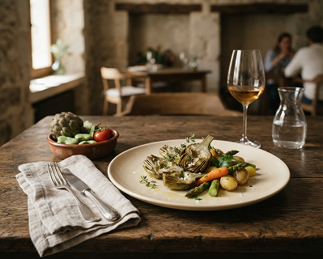
Back to the origin
We believe in the product before the technique. We cook what the market gives us each morning, with our own ferments, wild herbs, and the respect of those who know how to wait.
Founded in 2018 by a small group of friends, NOMA began as a table of six in a restored old stone house. The building retains its original walls, woodwork, and natural light. Large windows open the dining room to the street: you enter here calmly and leave wanting to return.
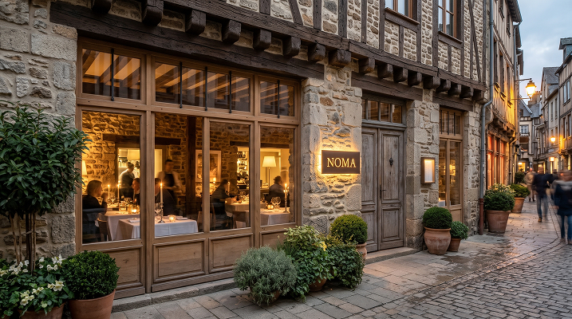
What defines us
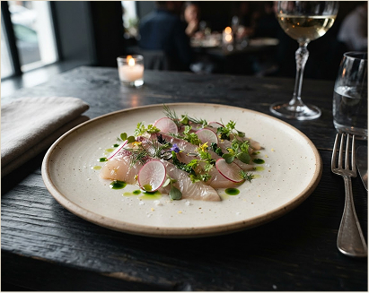
Since 2018Cured fish from the market
Wild herb and radish oil.
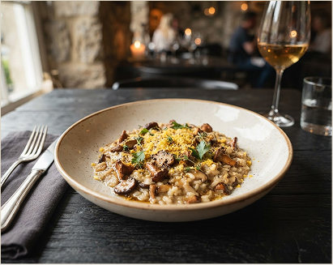
SeasonCreamy mushroom rice
Mountain mushrooms, cured egg yolk and toasted bread broth.
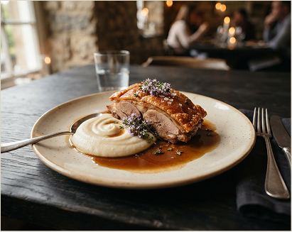
Slow fireMilk-fed lamb
Celery purée, bone jus and thyme flower.
Our kitchen, in numbers
A kitchen shaped by experience.
Rooted in our local community.
An intimate dining experience.
A menu led by the seasons.
A space to enjoy
The kitchen, the dining room, and every little detail are part of the same experience. We want you to feel at home, surrounded by calm, natural ingredients, and good food.
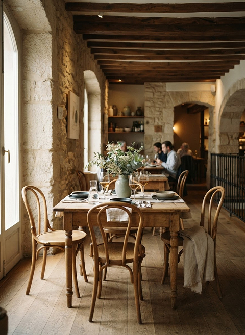
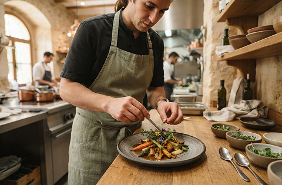
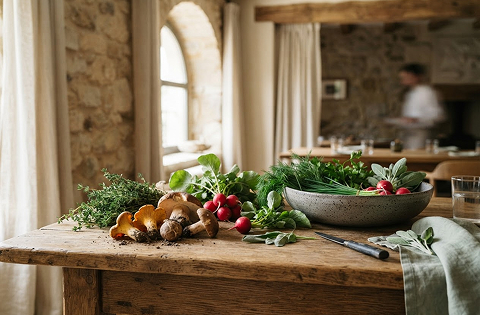
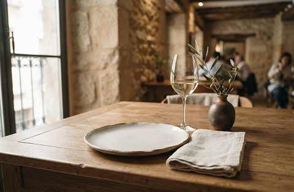
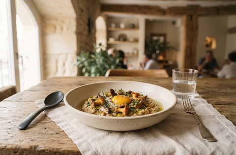
They vouch for us
- ★
Seasonal Cuisine Award
For a menu led by the seasons.
- ★
Local Produce Award
For championing local growers.
- ★
Sustainable Dining Award
For mindful, low-waste cooking.
More than a meal
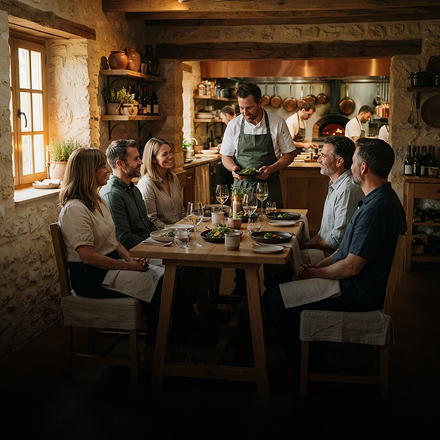
Chef's TableSix diners next to the kitchen, with the chef explaining each course. 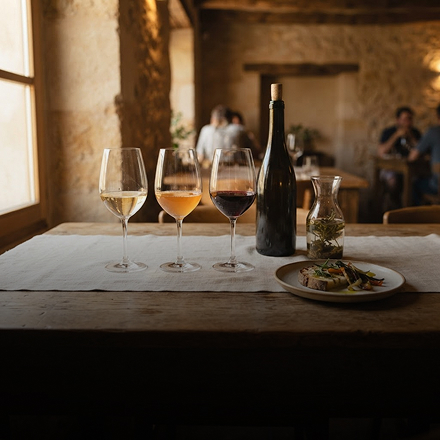
Natural pairingMinimal-intervention wines and house ferments. 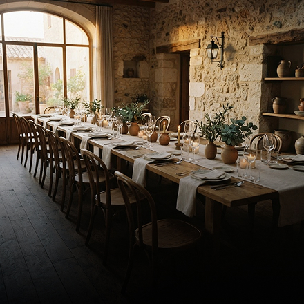
Private diningThe complete dining room for celebrations of up to 24 people.